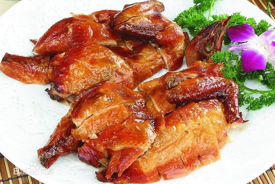
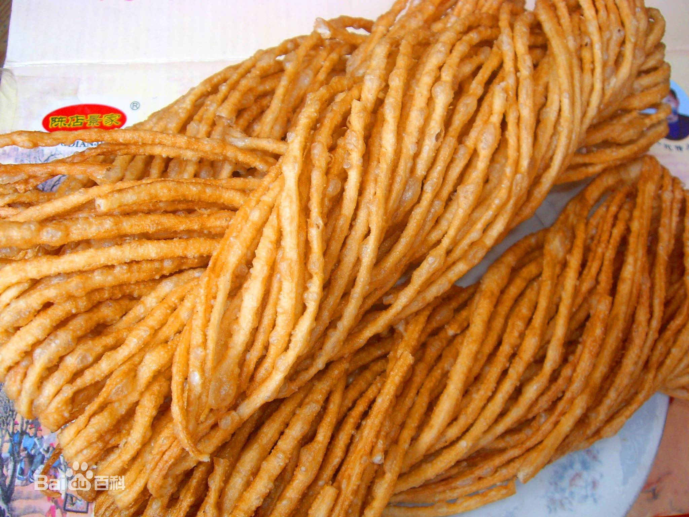
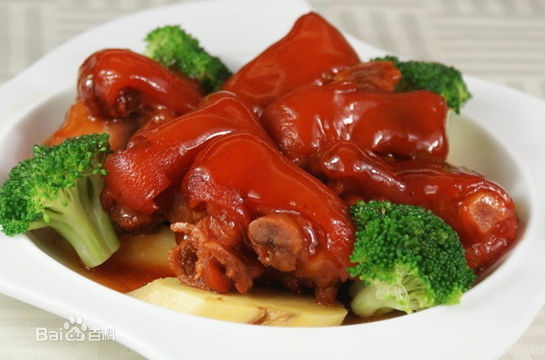
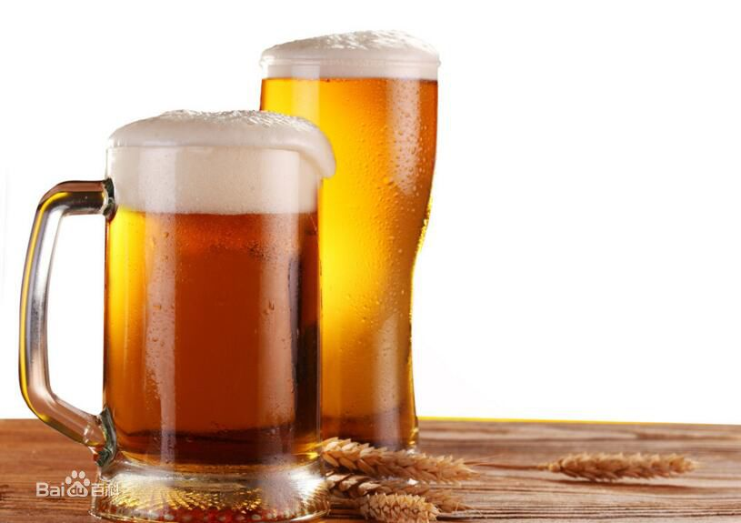
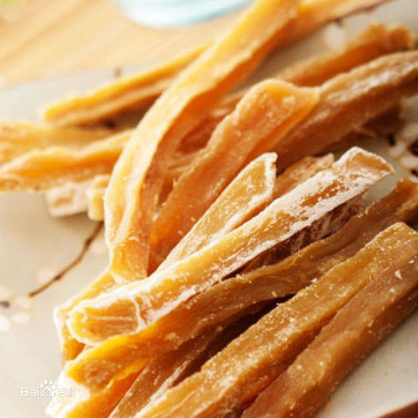
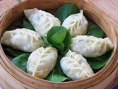
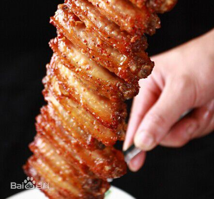
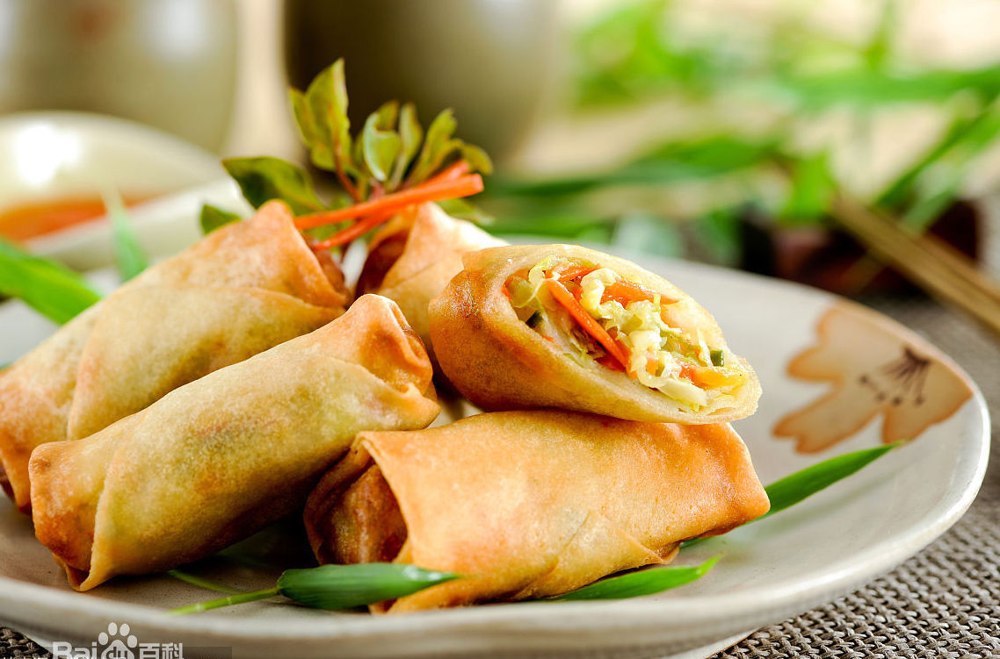
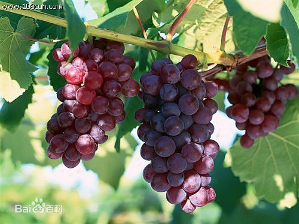

站点首页
关于青岛
区域文化
特色文化
青岛美食
教育建设
自然风光
名人之乡
联系我们
青岛美食

香酥鸡是山东地区特色传统风味名菜之一，属于鲁菜菜系。，焦酥异常，其色红润，肉烂味美，是佐酒之美味。

馓子，一种油炸食品，香脆精美。馓子色泽黄亮，层叠陈列，轻巧美观，干吃香脆可口，泡过牛奶后入口即化。

流亭猪蹄是山东青岛流亭街道的特色传统名菜。现已成为青岛流亭的地域性品牌。

青岛啤酒是以小麦芽和大麦芽为主要原料，并加啤酒花，经过液态糊化和糖化，再经过液态发酵而酿制成的。

地瓜枣是北方常见的一种利用地瓜加工制成的食品，是一种家常食物。

三鲜蒸饺选用海产大虾，加精猪肉为馅料，皮薄、馅大、灌汤，上笼蒸熟，趁热吃佳。

巴西的烤肉主要有烤牛肉，鸡腿，猪肉，香肠甚至菠萝，梨和苹果(菠萝是表面涂上巴西蜂蜜进行烘烤）。

春卷，又称春饼、春盘、薄饼。是中国民间节日的一种传统食品，流行于中国各地，在江南等地尤盛。

自八十年代初期，尹家村就成了果品生产专业村，葡萄种植面积大，品种达到50余个。
Contact Us :
胡帅博
Address：河南科技学院1号宿舍楼
Phone:18239290281
Email:979587457@qq.com
Class:物联网工程172
卢俊辉
Address：河南科技学院1号宿舍楼
Phone:18239409085
Email:768837811@qq.com
Class:物联网工程172
李桂宇
Address：河南科技学院1号宿舍楼
Phone:18567232103
Email:1537652059@qq.com
Class:物联网工程171
站点首页
|
关于青岛
|
青岛美食
|
教育建设
|
自然风光
|
区域文化
|
名人之乡
|
联系我们
Copyright © 2019.From the most important team（最最最的团队),About Qingdao
︿
Top
 胡帅博
胡帅博